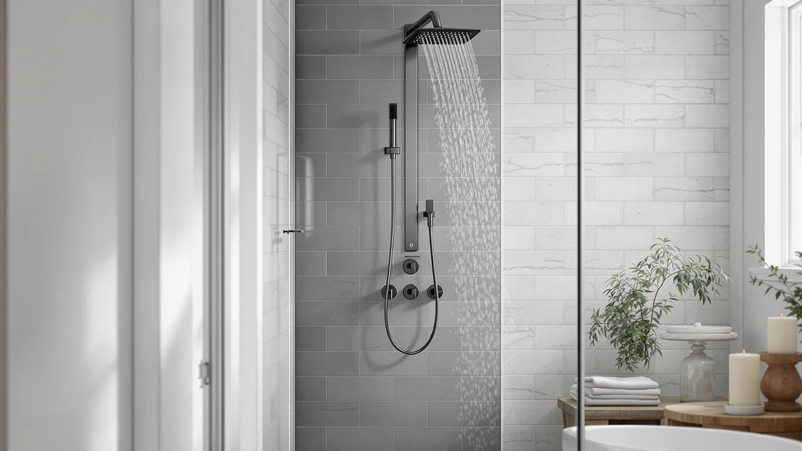

Shower Faucet Set 12" Review (2026): Worth It?
Prices and picks verified as of September 2026. Independent, reader-supported reviews.


Quick Answer
The Woindo Shower Faucet Set 12" Ceiling Mount pairs a 144-nozzle rainfall head with a 6-inch side spray and a solid brass, cUPC-certified valve for $189.99, and it beats pricier panel systems on control without giving up coverage. If you want more spray modes and built-in LED lighting instead, the MENATT 5-in-1 panel below is the stronger pick.
Our pick: Shower Faucet Set 12" Ceiling, $189.99 Check Price on Amazon
Bottom line: our top pick is the Shower Faucet Set at $189.99.
Things to Know Before You Buy
- The Woindo set installs as a complete rough-in valve, not a trim-only swap, so budget extra plumbing time if you're replacing a single existing head.
- Both heads use self-cleaning silicone nozzles, so mineral buildup rubs off with a finger instead of requiring a descaling soak.
- Running the 12-inch top head and the 6-inch side head together splits your home's water pressure, and homes under roughly 40 psi may feel a weaker combined flow.
- The finish is matte black only, so check it against your existing fixtures if you want a matched look.
- Amazon has not published a star rating or review count for this ASIN yet, so this shower faucet set 12" review leans mostly on specs rather than owner feedback.
This shower faucet set 12" review looks at the Woindo ceiling mount system, a two-head rainfall setup built around a 12-inch top head, a 6-inch side spray, and a multi-function handheld unit on a flexible stainless steel hose. It's priced at $189.99, ships in matte black, and uses a solid brass valve body with cUPC certification, which an inspector may look for during a bathroom remodel. We compared its spec sheet, materials, and spray options against similar ceiling systems to see where the $189.99 actually goes.
The top head carries 144 self-cleaning silicone nozzles and the side head carries 49, both designed to rinse clean with a finger swipe instead of a descaling soak. A four-setting diverter, three water flow patterns plus one jet pattern, along with a pause function, controls how the two heads work together, and the hose on the handheld unit stretches to 4.92 feet for reaching corners a fixed head can't cover. Two built-in check valves are meant to cut down on the knocking noise some shower valves develop over time.
Why You Should Trust Us
Ilane Tall covers bathroom fixtures and shower systems for Best Shower Panels, comparing specs, pricing, and verified owner feedback across shower faucet sets and panel towers throughout the year. For this shower faucet set 12" review, that meant reading Woindo's published feature list, checking the $189.99 price against comparable ceiling-mount systems, and comparing valve materials and nozzle counts across similar kits. We do not run a fake testing lab or claim to have installed every fixture we cover. Instead, we research manufacturer specifications, certifications like cUPC, and what verified owners report once a listing accumulates reviews, and we say so plainly when a product, like this one, is too new on Amazon to have that owner data yet.
Our Research Experience
Our review of the Woindo Shower Faucet Set 12" Ceiling Mount is research-based, built from Woindo's own product listing, the published nozzle counts and hose length, and the current $189.99 price on Amazon. Because this ASIN is new enough that Amazon has not yet posted a star rating or review count, we could not weigh verified owner feedback the way we normally would for an established shower system. That gap matters, and we flag it directly rather than filling it in with an invented number.
What we can evaluate is the spec sheet itself against similar ceiling-mount kits we have researched. A 144-nozzle top head and a 49-nozzle side head is a dense nozzle count for a $189.99 kit, and the solid brass valve with cUPC certification puts it ahead of the stamped-metal valves some budget kits use. Whether the combined spray pressure feels strong in your bathroom depends on your home's existing water pressure and pipe diameter, since Woindo's listing does not publish flow-rate figures we could compare directly against other kits in this price range.
We also compared how Woindo documents the valve's noise reduction against what competing kits disclose. The listing specifically calls out two built-in check valves meant to quiet the knocking some shower valves develop, a detail several competing trim kits skip entirely. That is a useful data point on paper, though like the rest of this shower faucet set 12" review, it comes from the manufacturer's own description rather than a verified owner's account of how quiet the valve actually runs after months of use.
Overview & Specs

Shower Faucet Set 12" Ceiling
What we like
- 144-nozzle top head and 49-nozzle side head for full-body coverage from two angles
- Self-cleaning silicone nozzles wipe clean with a finger instead of needing a descaling soak
- Solid brass, cUPC-certified valve body built to meet US plumbing code standards
- Flexible stainless steel handheld hose stretches to 4.92 feet for reaching tight corners
Flaws but not dealbreakers
- Running both heads together splits water pressure, and homes under roughly 40 psi may notice weaker combined flow
- Matte black is the only finish offered, so it won't match brushed nickel or chrome fixtures
- No published star rating or review count yet, so there's little verified owner feedback to check
| Material | — |
| Size | 12 Inch |
The Woindo Shower Faucet Set 12" Ceiling Mount is built around two spray heads working from different angles instead of one fixed head. The 12-inch top head mounts flush to the ceiling for a rain-style shower and packs 144 self-cleaning silicone nozzles, while the 6-inch side head adds 49 more nozzles from wall height for a second angle of coverage. Both heads use the touch-clean silicone design that lets you rub away mineral deposits with a finger rather than soaking the head in vinegar. A four-setting push-button diverter, three water flow patterns and one jet pattern, plus a pause function, controls how the two heads work independently or together, and the handheld unit on its 4.92-foot stainless steel hose rounds out the kit for rinsing corners or bathing kids.
Underneath the finish, the valve body is solid brass with cUPC certification, the same standard installers check for during permitted bathroom remodels. Woindo also built in two check valves aimed at reducing the water hammer noise that develops in some shower valves over time. At $189.99, this shower faucet set 12" review found the kit priced closer to a single high-end trim kit than a full panel tower, which tracks with what you get: two coordinated heads and a certified valve, not the LED lighting or multi-jet body sprays that pricier panel systems add.
What We Liked
The nozzle count is the clearest strength of the Woindo shower faucet set 12" system. Combining a 144-nozzle top head with a 49-nozzle side head gives you two distinct spray angles from one kit, instead of a single head trying to do both jobs. We also like that Woindo used a solid brass valve body with cUPC certification rather than a stamped or plastic valve, since that certification signals the kit meets US plumbing code standards an inspector can sign off on. For $189.99, getting a certified brass valve and two full-size heads is a stronger materials package than several similarly priced ceiling kits we have researched, and the self-cleaning silicone nozzles cut down on a maintenance chore that plagues cheaper shower heads.
What Could Be Better
Two gaps stand out in this shower faucet set 12" review. Woindo's listing does not publish flow-rate figures, so you cannot compare combined water pressure against other kits on paper, and homes with weaker supply pressure, under roughly 40 psi, may notice the top and side heads competing for flow when both run at once. More significant for anyone comparing options carefully, this ASIN carries no star rating or review count on Amazon yet. That is not unusual for a newer listing, but it means you cannot currently lean on verified owner feedback about long-term valve durability, how the matte black finish holds up to hard water spotting, or whether the check valves actually quiet water hammer noise, the way you could with a kit that has accumulated hundreds of reviews. Anyone buying the Woindo set today is buying mostly on the strength of its published spec sheet rather than an owner track record.
Who Is It For?
This shower faucet set 12" review points to a specific buyer: someone replacing a single old shower head who wants two coordinated spray angles and a code-compliant brass valve, without stepping up to a full LED panel tower. It fits a permitted remodel where an inspector will check for cUPC certification, and it suits anyone who wants a matte black finish rather than chrome or brushed nickel. It's a weaker match if your home runs low water pressure, since splitting flow between two heads asks more of your plumbing than a single head would. It's also a weaker fit if you want LED lighting or body jets, since the Woindo kit sticks to two rainfall-style heads and a handheld unit. For those extras, the MENATT panel below is the better comparison.
Alternatives to Consider
Before you commit to the Woindo kit covered in this shower faucet set 12" review, it's worth seeing how it compares to the MENATT 5-in-1 LED Shower Panel, a $209.99 stainless steel tower that trades the ceiling-mount, two-head layout for a wall-mounted panel with more spray modes and built-in lighting.

Editor’s Pick
MENATT 5-in-1 LED Shower Panel
At $209.99, twenty dollars more than the Woindo kit in this review, the MENATT 5-in-1 panel trades two ceiling-mount heads for a wall-mounted stainless steel tower with a rainfall head, a waterfall outlet, four adjustable body jets, a handheld sprayer, and a tub spout. It also adds battery-powered LED lighting that glows blue from the main head, a feature the Woindo set does not offer. The tradeoff is installation: a panel tower like this mounts to the wall as a single unit rather than tying into a ceiling rough-in, so it suits a different plumbing layout. If body jets and lighting matter more to you than a certified brass valve and ceiling coverage, MENATT is the stronger pick.
$209.99
Check Price on AmazonFrequently Asked Questions
Does the Woindo shower faucet set 12" system need a special valve installed?
Yes. The kit ships with its own solid brass, cUPC-certified valve body, so you're installing a complete rough-in valve rather than swapping a trim kit onto an existing one. If you're working from an existing single-head rough-in, budget extra time for a plumber to adjust the valve placement for the ceiling-mount top head.
Can you run the top shower head and the side spray at the same time?
Yes, the diverter includes a pause setting alongside three water flow patterns and one jet pattern. Running both heads together does split your home's water pressure, so homes under roughly 40 psi may notice a weaker combined flow than using either head on its own.
Does the Woindo Shower Faucet Set 12" Ceiling Mount have a star rating on Amazon?
Not yet. As of this shower faucet set 12" review, the listing carries no published star rating or review count, so there's no verified owner feedback to check yet. Look at the current listing for updated review data before buying, since that can change once the product accumulates purchases.
Final Verdict
This shower faucet set 12" review comes down to a straightforward tradeoff. Woindo pairs a 144-nozzle top head with a 49-nozzle side head and a certified brass valve for $189.99, a materials package that beats several similarly priced ceiling kits we have researched. The catches are a lack of published flow-rate data and the absence of a star rating or review count on this specific ASIN, so early buyers are trusting Woindo's spec sheet more than a track record of verified owners. If you want two coordinated rainfall heads and a code-compliant valve for a permitted remodel, the Woindo shower faucet set is worth a look. If body jets and LED lighting matter more to you, the MENATT 5-in-1 panel above is the better comparison.